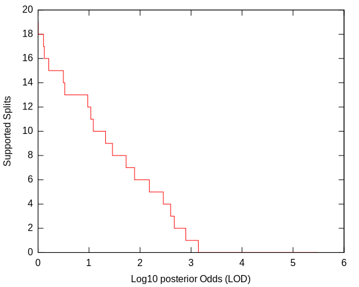
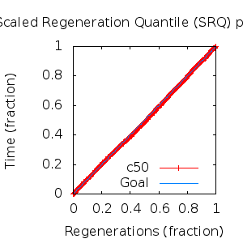
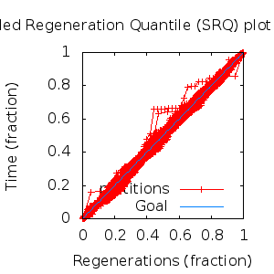

MCMC Post-hoc Analysis: 28 sequences
Data & Model
| Partition | Sequences | Lengths | Alphabet | Substitution Model | Indel Model | Scale Model |
|---|
| 1 |
E5_beta_aa.fas |
43 - 48 |
Amino-Acids | S1 = lg08+f |
I1 = rs07 |
scale1 ~ gamma[0.5,2] |
Scalar variables
| Statistic | Median | 95% BCI | ACT | ESS | burnin | PSRF-CI80% | PSRF-RCF |
|---|
| prior |
13.76 |
(-15.36, 42.36) |
17 |
15878 |
270
|
1 | 0.9981
|
| prior_A1 |
-102.6 |
(-123.3, -83.18) |
7.752 |
34830 |
75
|
0.9999 | 1.001
|
| likelihood |
-1671 |
(-1690, -1653) |
8.368 |
32267 |
431
|
0.9999 | 0.9962
|
| posterior |
-1658 |
(-1686, -1631) |
16.78 |
16094 |
282
|
1 | 0.9995
|
| Heat.beta |
1 |
| | | | | |
| Scale[1] |
8.571 |
(5.788, 11.99) |
1.388 |
194541 |
164
|
0.9999 | 0.9997
|
| f:pi[A] |
0.03637 |
(0.02039, 0.05499) |
7.449 |
36246 |
293
|
0.9997 | 0.998
|
| f:pi[R] |
0.05671 |
(0.03082, 0.08653) |
7.831 |
34478 |
390
|
1 | 0.9995
|
| f:pi[N] |
0.01542 |
(0.004909, 0.02906) |
8.029 |
33629 |
878
|
1 | 0.9953
|
| f:pi[D] |
0.09284 |
(0.05453, 0.1357) |
8.266 |
32665 |
327
|
0.9998 | 1.004
|
| f:pi[C] |
0.02112 |
(0.008796, 0.03622) |
7.957 |
33932 |
251
|
1 | 1.002
|
| f:pi[Q] |
0.04006 |
(0.02216, 0.06116) |
8.404 |
32127 |
400
|
0.9998 | 0.9964
|
| f:pi[E] |
0.03468 |
(0.01569, 0.05669) |
7.874 |
34292 |
377
|
0.9997 | 0.9967
|
| f:pi[G] |
0.107 |
(0.06357, 0.1552) |
9.228 |
29260 |
240
|
1 | 0.999
|
| f:pi[H] |
0.03288 |
(0.01747, 0.05088) |
8.389 |
32185 |
428
|
0.9999 | 1.001
|
| f:pi[I] |
0.05536 |
(0.03977, 0.07243) |
8.658 |
31184 |
379
|
0.9997 | 0.9966
|
| f:pi[L] |
0.1709 |
(0.1361, 0.2078) |
7.273 |
37124 |
291
|
0.9999 | 1.005
|
| f:pi[K] |
0.01808 |
(0.005837, 0.03407) |
8.047 |
33551 |
571
|
1 | 0.9965
|
| f:pi[M] |
0.02457 |
(0.01502, 0.03561) |
7.862 |
34341 |
381
|
0.9999 | 0.9997
|
| f:pi[F] |
0.04415 |
(0.02882, 0.06149) |
8.176 |
33024 |
320
|
1 | 1.003
|
| f:pi[P] |
0.04058 |
(0.0153, 0.07075) |
8.631 |
31284 |
491
|
1 | 0.9966
|
| f:pi[S] |
0.03684 |
(0.01846, 0.05759) |
8.213 |
32875 |
307
|
1 | 1.002
|
| f:pi[T] |
0.04987 |
(0.03038, 0.07146) |
7.52 |
35905 |
580
|
1 | 0.9998
|
| f:pi[W] |
0.0109 |
(0.002073, 0.02316) |
8.492 |
31795 |
437
|
0.9999 | 0.9966
|
| f:pi[Y] |
0.02247 |
(0.009462, 0.03845) |
7.639 |
35347 |
267
|
1 | 0.9993
|
| f:pi[V] |
0.07252 |
(0.05213, 0.09524) |
8.766 |
30802 |
449
|
1 | 0.9953
|
| rs07:mean_length |
1.327 |
(1.004, 1.849) |
3.945 |
68437 |
201
|
0.9998 | 0.9983
|
| rs07:log_rate |
-4.044 |
(-4.588, -3.569) |
2.552 |
105782 |
131
|
1 | 0.9979
|
| |A1| |
56 |
(53, 59) |
20.92 |
12907 |
207 |
0.75 | 0.9987
|
| #indels1 |
16 |
(12, 19) |
4.869 |
55449 |
71 |
0.75 | 1
|
| |indels1| |
20 |
(14, 25) |
9.261 |
29155 |
170 |
0.875 | 0.9991
|
| #substs1 |
332 |
(325, 340) |
12.18 |
22168 |
179 |
0.9091 | 0.9979
|
| Scale1*|T| |
9.691 |
(8.341, 11.18) |
4.41 |
61220 |
142
|
1 | 0.9989
|
| |A| |
56 |
(53, 59) |
20.92 |
12907 |
207 |
0.75 | 0.9987
|
| #indels |
16 |
(12, 19) |
4.869 |
55449 |
71 |
0.75 | 1
|
| |indels| |
20 |
(14, 25) |
9.261 |
29155 |
170 |
0.875 | 0.9991
|
| #substs |
332 |
(325, 340) |
12.18 |
22168 |
179 |
0.9091 | 0.9979
|
| |T| |
1.133 |
(0.7779, 1.531) |
1.006 |
268339 |
77
|
1 | 0.9993
|
Phylogeny Distribution


Alignment Distribution
Partition 1
|
|
|
Diff |
|
Min. %identity |
# Sites |
Constant |
Informative |
| Initial |
FASTA |
HTML |
Diff |
|
8.51% |
48 |
2 (4.17%) |
44 (91.7%) |
| Best (WPD) |
FASTA |
HTML |
|
AU |
12.2% |
56 |
2 (3.57%) |
47 (83.9%) |
Mixing
Statistics: | scalar burnin | 878 | | scalar ESS | 1.291e+04 | | topological ESS | | | ASDSF | NA | | MSDSF | NA | | PSRF CI80% | 1 | | PSRF RCF | 1.005 |
|  |
Analysis
directory: /work/awillemsen/bali-phy/AlphaPVs_E5_aa_new
version: 3.3
| chain # | burnin | subsample | Iterations (after burnin) | command line | subdirectory |
|---|
| 1 |
10000 |
1 |
90000 |
bali-phy E5_beta_aa.fas -s 12169 -i 100000 -n AlphaPVs_E5_beta |
AlphaPVs_E5_beta-1 |
| 2 |
10000 |
1 |
90000 |
bali-phy E5_beta_aa.fas -s 82369 -i 100000 -n AlphaPVs_E5_beta |
AlphaPVs_E5_beta-2 |
| 3 |
10000 |
1 |
90000 |
bali-phy E5_beta_aa.fas -s 64827 -i 100000 -n AlphaPVs_E5_beta |
AlphaPVs_E5_beta-3 |
| P(data|M) = -1690.178 +- 0.156
|
Complete sample: 139698
topologies |
95% Bayesian credible interval: 125098 topologies |
Model and priors
Tree (+priors)
| topology | ~ uniform on tree topologies |
| branch lengths | ~ iid[num_branches[T],gamma[0.5,div[2,num_branches[T]]]] |
Substitution model (+priors)
| S1 | = |
lg08+f
| f:pi | ~ | dirichlet_on[letters[@a],1]
|
|
Indel model (+priors)
| I1 | = |
rs07
| rs07:log_rate | ~ | laplace[-4,0.707]
|
| rs07:mean_length | ~ | exponential[10,1]
|
|
Scales (+priors)
{kind=link}
{kind=link}
{kind=link}
{kind=link}
{kind=link}
{kind=link}
{kind=link}
{kind=link}